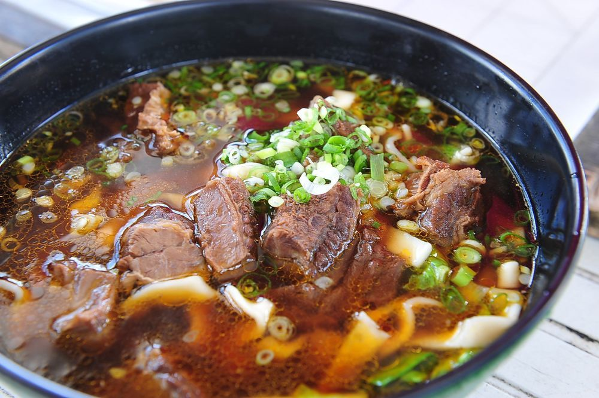

牛肉麵是泛指各種以燉煮過的牛肉為主要配料的湯麵食，其根源難以追溯，但與近代牛肉麵調理方式較為接近的麵食，清燉類的牛肉麵部分認為起源於蘭州牛肉麵，原本是陳維精所創。
而紅燒風味的牛肉麵最普遍的說法來自台灣高雄市岡山區空軍眷村的大陸四川籍老兵，以成都菜「小碗紅湯牛肉」改良而成[a]。現今牛肉麵已是華人的普遍食物，各地方的牛肉麵都有其特色。
現在有不少速食麵都是以添加牛肉或牛肉口味而成牛肉麵，尤其是在台灣非常的普遍
台灣的牛肉麵歷史並不長，係由政府遷台後移居台灣的外省人所創，現在台灣牛肉麵已發展成台灣特色的食品，一般區分為「清燉牛肉麵」和「紅燒牛肉麵」。
並與台南地區普遍流行的牛肉湯並列台灣代表性的牛肉料理。紅燒牛肉麵最普遍的說法來自台灣高雄岡山空軍眷村的四川藉老兵，以成都菜「小碗紅湯牛肉」改良而成